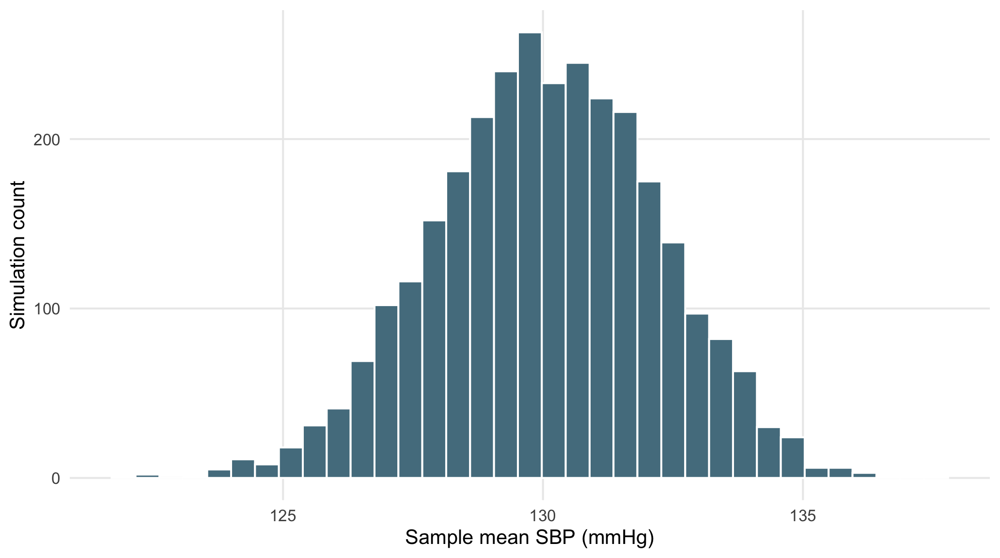
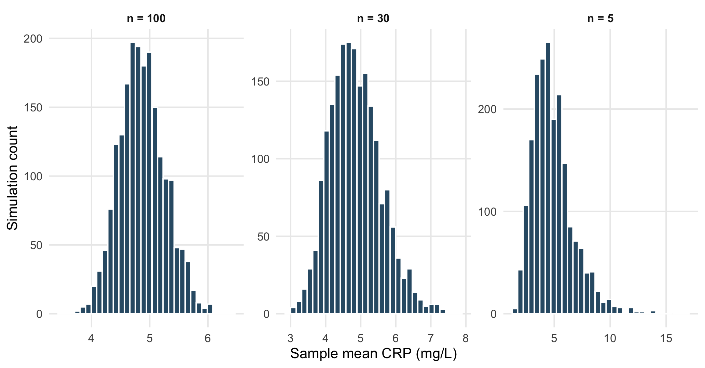

Statistical inference treats the observed sample as one outcome of a repeatable sampling process. A key distinction is between the distribution of individual observations and the sampling distribution of a statistic. For example, CRP measurements may be strongly right-skewed while the distribution of sample means is much closer to normal.
A simple random sample gives each eligible observation an equal chance of selection. Stratified sampling divides the population into predefined groups and samples within each group. If sampling fractions differ across strata, population estimates may require sampling weights.
Bias occurs when the sampling process systematically produces a sample that does not represent the target population. For example, sampling only older participants may give distorted estimates if the target population includes all ages.
tibble(
sample=c("All participants","Age ≥65 years"),
mean_age=c(mean(dat$age_years), mean(dat$age_years[dat$age_years>=65])),
mean_sbp=c(mean(dat$sbp_baseline_mmHg), mean(dat$sbp_baseline_mmHg[dat$age_years>=65]))
) |>
kbl(digits=2, caption="A deliberately biased sampling example")| sample | mean_age | mean_sbp |
|---|---|---|
| All participants | 55.03 | 130.1 |
| Age ≥65 years | 71.49 | 137.0 |
The sampling distribution describes how a statistic would vary across repeated samples. Its standard deviation is the standard error (SE).
For the sample mean,
\[ SE(\bar X)=\frac{\sigma}{\sqrt n}. \]
Because the population standard deviation \(\sigma\) is usually unknown, the SE is estimated using the sample standard deviation:
\[ \widehat{SE}(\bar X)=\frac{s}{\sqrt n}. \]
The observed baseline SBP values are treated as an empirical population, and samples of 40 observations are repeatedly drawn with replacement.
sbp <- na.omit(dat$sbp_baseline_mmHg)
means40 <- replicate(3000, mean(sample(sbp, 40, replace=TRUE)))
tibble(
empirical_mean=mean(means40),
empirical_SE=sd(means40),
theoretical_SE=sd(sbp)/sqrt(40)
) |>
kbl(digits=3, caption="Sampling distribution of the mean")| empirical_mean | empirical_SE | theoretical_SE |
|---|---|---|
| 130.1 | 2.146 | 2.126 |
ggplot(tibble(mean_sbp=means40), aes(mean_sbp)) +
geom_histogram(bins=35, fill="#547D8E", colour="white") +
labs(x="Sample mean SBP (mmHg)", y="Simulation count")
Figure 3.1: Simulated sampling distribution of mean baseline SBP for samples of size 40.
The central limit theorem (CLT) explains why the sampling distribution of a mean becomes approximately normal as sample size increases, even when the original observations are skewed. It does not imply that the original data become normal.
crp <- na.omit(dat$crp_baseline_mg_L)
clt <- bind_rows(
tibble(value=replicate(2000, mean(sample(crp,5,TRUE))), n="n = 5"),
tibble(value=replicate(2000, mean(sample(crp,30,TRUE))), n="n = 30"),
tibble(value=replicate(2000, mean(sample(crp,100,TRUE))), n="n = 100")
)ggplot(clt, aes(value)) +
geom_histogram(bins=32, fill="#315B74", colour="white") +
facet_wrap(~n, scales="free") +
labs(x="Sample mean CRP (mg/L)", y="Simulation count")
Figure 3.2: Sampling distributions of the mean for a right-skewed CRP variable.
As \(n\) increases, the sampling distribution becomes narrower and more symmetric.
A confidence interval gives a range of plausible values for the population mean. When the population variance is unknown, the sample standard deviation \(s\) is used and the interval is based on the \(t\)-distribution.
\[ \bar{x}\pm t_{1-\alpha/2,\,n-1}\frac{s}{\sqrt n}. \]
The critical value t is the multiplier taken from the \(t\)-distribution; It determines how many standard errors are used in the confidence interval, and it depends on the sample size.
t.test(dat$sbp_baseline_mmHg, conf.level=.95)$conf.int
#> [1] 128.7 131.5
#> attr(,"conf.level")
#> [1] 0.95A 95% confidence interval is produced by a method that would contain the true parameter in about 95% of repeated samples, assuming the model assumptions hold.
For a two-sided test at \(\alpha=0.05\), a 95% confidence interval that excludes the null value usually corresponds to \(p<0.05\). The interval also shows the estimated effect and the uncertainty around it (Greenland et al. 2016; Wasserstein and Lazar 2016).